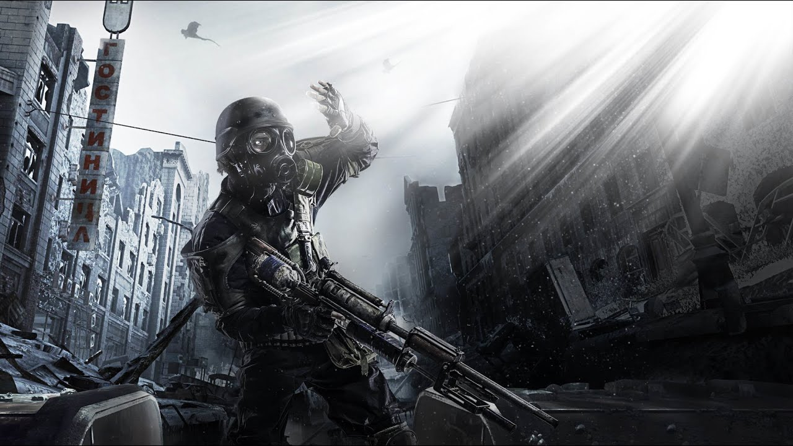

Москва. 2033 год. Двадцать лет после ядерной войны. Молодой выживший Артём отправляется в смертоносное путешествие через метро, чтобы спасти свою станцию.
← Все игрыДействие игры разворачивается в 2033 году — спустя двадцать лет после ядерной войны, уничтожившей поверхность Земли. Москва превратилась в радиоактивную пустошь, а немногочисленные выжившие укрылись в Московском метрополитене. Около 50 000 человек продолжают жить в тоннелях и на станциях.
Главный герой — Артём — вырос на станции ВДНХ (Выставка достижений народного хозяйства), одной из самых отдалённых обитаемых станций московского метро. Станция долгие годы успешно отбивала нападения мутантов, но в 2033 году началась новая угроза — Тёмные.
Тёмные — таинственные мутировавшие существа с телепатическими способностями — начали появляться у северного тоннеля ВДНХ. Каждый контакт с ними заканчивался безумием или смертью человека. Станция оказалась под угрозой полного уничтожения.
По просьбе Хантера — рейнджера Ордена — Артём отправляется в опасный путь через всё метро. Его цель — добраться до Полиса, центральной нейтральной станции, и передать послание Ордену.
По дороге Артём проходит через территории враждующих фракций: сталкивается с фашистским Рейхом, наблюдает за идеологической машиной Красной линии, слышит о мистических Наблюдателях и духах метро. Каждый участок пути — отдельная история выживания.
Ключевая идея игры — вопрос о природе Тёмных. На протяжении всего путешествия Артём видит вспышки воспоминаний и чувствует необъяснимую связь с этими существами. В конце игры становится ясно, что Тёмные — не враги, а эволюционировавшие потомки людей, пытавшиеся установить контакт.
Развязка зависит от действий игрока: плохая концовка — Артём уничтожает колонию Тёмных ракетным обстрелом Д-6, не понимая своей ошибки. Хорошая концовка (только в Redux) — игрок находит достаточно моральных точек и осознаёт истину до того, как нажать кнопку.
Молодой выживший, выросший на ВДНХ. Молчаливый, наблюдательный. Именно его особая связь с Тёмными определяет судьбу всей игры.
Загадочный рейнджер, поручивший Артёму миссию. Исчезает в начале игры, оставив жетон — единственное доказательство важности задания.
Философ и проводник метро. Верит в духов тоннелей. Один из самых интересных персонажей — говорит загадками и видит то, что другие не замечают.
Приёмный отец Артёма. Мудрый старик со станции ВДНХ. Именно он воспитал Артёма и является якорем главного героя в мире хаоса.
Опытный путешественник по тоннелям. Берётся проводить Артёма за деньги. Циничный реалист, который знает цену каждому патрону.
Офицер Красной линии. Встречается Артёму в тоннелях. Фанатично предан идеологии, но в нём есть и человечность.
Артём нажимает кнопку. Ракеты уничтожают логово Тёмных на Д-6. Станция ВДНХ спасена. Но Артём не знает, что только что уничтожил единственный шанс человечества на контакт с новой формой жизни. Именно эта концовка считается каноничной для Metro: Last Light.
Только в Redux — если собрать достаточно «моральных очков» (выбирать мир, слушать разговоры, находить улики). Артём вспоминает: Тёмные пытались помочь. Он не нажимает кнопку. Тёмные улетают. Маленький выживший Тёмный — друг детства Артёма — остаётся.